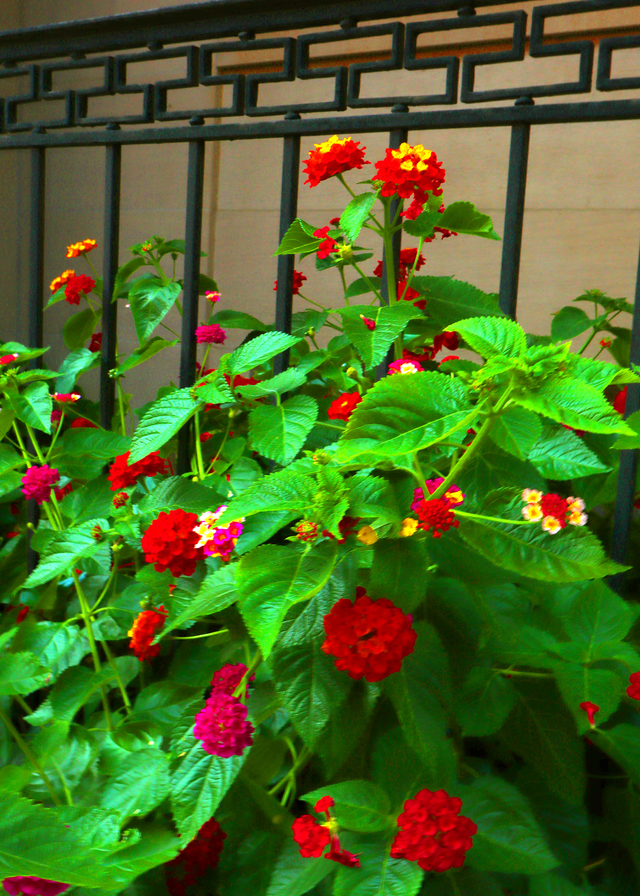

As my group and I were walking around the area looking for things to photograph these flowers caught my eye. I love flowers and I could appericate how beautifully intricate they were. When it came to adjusting tonal range, I decided that I wanted the image to appear a lot more vibrant. I increased the saturation to 71, adjusted the yellow color balance to -46, and the exposure to +2.45. This enhanced the natural colors of the flowers and helped the image look less dull
